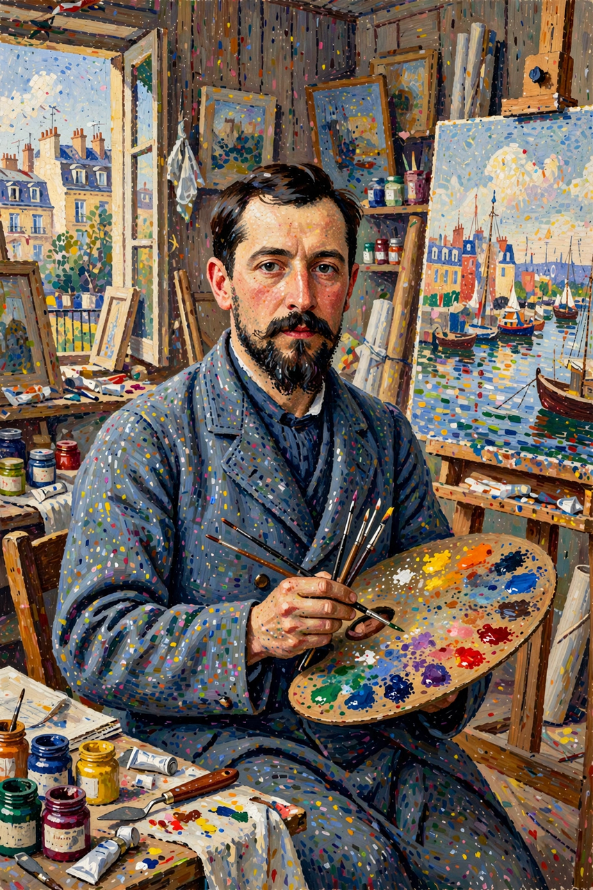

Wikipedia — The Free Encyclopedia

Paul Victor Jules Signac (11 November 1863 – 15 August 1935) was a French Neo-Impressionist painter who, with Georges Seurat, developed the technique of Pointillism. His large, luminous canvases of the French coast, harbours and Mediterranean light made him one of the leading figures of the movement, and his treatise D'Eugène Delacroix au Néo-Impressionnisme (1899) became its principal theoretical statement.
Signac was born in Paris into a prosperous family of saddlers. He intended to study architecture but, after seeing an exhibition of Claude Monet's work in 1880, decided to become a painter. He taught himself, copying the Impressionists at the Louvre, and was encouraged by the painter Armand Guillaumin.
In 1884 Signac met Georges Seurat and was converted to the younger artist's systematic method of dividing colour into small, separate touches — a technique Seurat called chromoluminarism and critics dubbed Pointillism. Together they helped found the Société des Artistes Indépendants the same year, whose annual Salon des Indépendants became the movement's showcase. After Seurat's early death in 1891, Signac became the group's spokesman and mentor to younger painters including Henri Matisse and André Derain, who visited him at Saint-Tropez in 1904 — a stay that helped launch Fauvism.
An ardent sailor, Signac painted ports and regattas along the coasts of France: Cassis, Collioure, Antibes, and above all Saint-Tropez, where he bought a house in 1892. His late works include the series of monumental watercolours of French harbours, the Ports de France. Politically he held anarchist sympathies shared with Camille Pissarro. Signac died in Paris in 1935, having served as president of the Société des Artistes Indépendants from 1908 until his death.